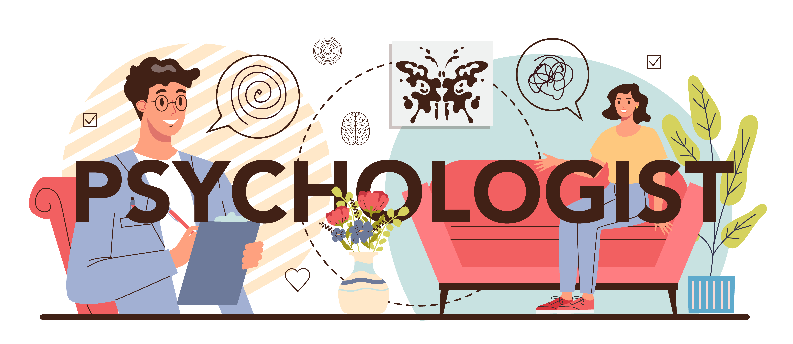

Master
Master de psychologie, psychopathologie de la vie quotidienne et du contemporain
Université Catholique de Lille — 2024
Psychologue • Lille

Une approche clinique attentive, précise et ajustée au cas par cas, dans un cadre défini ensemble.
Psychologue à Lille, j’accueille les patients dans un espace d’écoute confidentiel, dans une démarche clinique fondée sur la parole et le respect de la singularité de chacun.
Le travail thérapeutique se construit dans un cadre défini ensemble, avec l’objectif de rendre cet espace le plus sécurisant possible. Le suivi s’ajuste à votre situation, à votre demande et au rythme qui vous convient.
Diplôme national et universitaire
Master de psychologie, psychopathologie de la vie quotidienne et du contemporain
Université Catholique de Lille — 2024
Repères de parcours
Chargé d’enseignement — Université Catholique de Lille
Praticien clinicien — Centre Hospitalier de Lens
Psychiatrie adulte
Stagiaire — EPSM Agglomération Lilloise
Pédopsychiatrie
Intervenant — Le Courtil / IMP Notre Dame de la Sagesse
La consultation est un lieu où la parole peut se déposer, se préciser et se travailler. Le suivi ne repose pas sur une réponse automatique, mais sur une écoute clinique attentive et ajustée.
Il s’agit de construire un cadre suffisamment clair pour permettre un travail thérapeutique sérieux, tout en laissant place à ce qui est propre à votre histoire et à votre vécu.
Quelques principes qui orientent le suivi
Le cadre des séances est pensé avec vous, afin d’offrir un espace stable, lisible et sécurisant.
Chaque situation appelle une écoute spécifique. Le suivi se construit au cas par cas.
Le travail thérapeutique prend appui sur votre parole, votre histoire et votre manière propre d’éprouver les difficultés rencontrées.